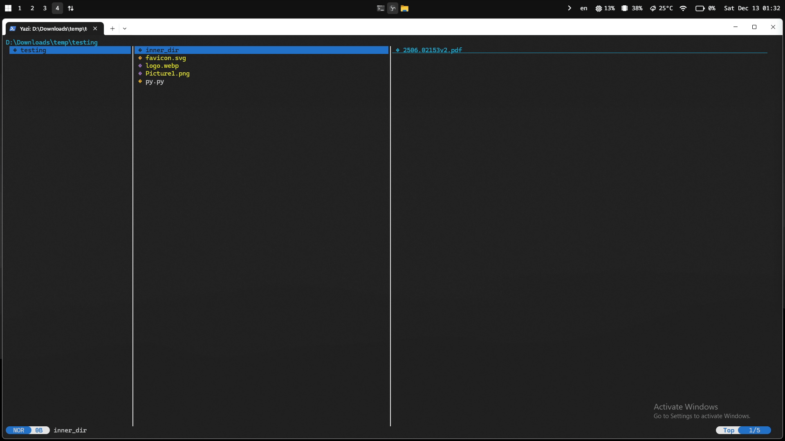

Dev tools I use to solve first world developer problems

Introduction
I consider myself a lazy person. That's how I got pulled into tech. The ability to automate things piqued my interest. One of the first programming books I ever picked up was "Automate the Boring Stuff with Python" The idea that you could automate away dull, repetitive tasks felt like a superpower. Playing around with code to optimise my day to day work was part curiousity, part puzzle solving but definitely at the end of the day when the workflow worked, fulfilment from the amount of time saved was worth it.
In a similar vein, nowadays every morning, when I sit down to work, I face the frictions in my workflow. First-world problems that derail focus and momentum. After enough procrastination, I finally decided to do something about it.
Problems
Mouse.
- The mouse is like who Jerry is to Tom. I need Jerry, who usually means well but is constantly interrupting me. Every time I reach for it, my momentum collapses. I'm dragging a tiny arrow around the screen hoping it lands exactly where I want. Sure it works but it's clumsy, slow, and just fussy enough to annoy me.
cd overload.
-
Life just has too many folders, too many keystrokes, and way too much typing just
to navigate around. Too many times, I have closed terminals to avoid cluttering
my window space, only to realise that I need them again. Then comes the cycle of
cds andlss.
Tiling annoyance.
- I am somewhat of an particular person. If I see an imperfection, it just ticks me. Especially, window tiling. Combine that with tiling with a mouse? Mama mia. Although there is the built-in Windows tiling which has come a long way, its just not for me. It still doesn't feel snappy and hands-off enough.
Lack of quick access.
- Lack of quick access in windows. I constantly open the same tools, files, and utilities, yet jump through hoops every time.
Solutions
Now I mostly use Windows. While I have been a long time user of linux, I am just too lazy to deal with hardware problems and I want to run my commerical applications without any hassle. So most stuff I am going to talk about is for Windows.
Vimium
As I have mentioned I'm a keyboard person. I don't like using mouse if I can help with it It's not that the mouse is bad. It's just slow, needs precision / fiddly. Especially inconvenient on a laptop or when moving around. The context switching between my mouse and keyboard also kicks me out of the zone sometimes.
Nonetheless, mouse is extremely useful and a vital tool. I just want to reduce not replace. And where do I most use the mouse? Browsing the web.
Vimium instantly became a must-have.
I am blown away by how useful it has been for me. Having sensible keyboard bindings to navigate through the web has reduced my need for the mouse by about 70%.
I am able navigate through pages, select and copy text, switch tabs back and forth easily and even open a search bar for specific selection instead of cycling through the tabs. I can go back and forth in my page history. All this without touching my mouse.
To see more, https://vimium.github.io .

GlazeWM
I am a heavy user of desktop panel switching. Despite improvements in tiling in windows 11. I am still just too lazy. I want it automated and snappy.
Honestly, GlazeWM works well enough. The latency is sometimes noticeable but still quite snappy. It met all my tiling needs, panels to seggregate windows, auto tile windows, resizing, moving and fullscreen toggling.

Flow Launcher
This is a game changer. The accessibility and configuration freedom has reduce much of the friction I face in my workflows. Flow Launcher acts as a universal command palette for Windows, allowing me to interact with my system almost entirely from the keyboard. I can instantly launch applications, search files, run system commands, and perform calculations with a single shortcut. It's plugin ecosystem allows me to control windows, search the web, execute shell commands, translate text, manage clipboard history, and even trigger custom scripts, all without leaving my current context.

Yazi
Yazi is a terminal manager that eliminates my cd
and ls troubles. I can navigate across directories
and files easily especially with features like preview, fzf,
multi-tab support.
In addition, the vim-like keybindings which lets me do
file management easily, avoiding the need for default file managers
like windows explorer, reducing number of windows I have to manage.
To find out more check this out https://yazi-rs.github.io/features
wezterm + oh my posh
Was tired to having to switch between terminals when switching between linux and windows machines. Different configurations, different key bindings frustrated me. But now, I can re-use my configurations across linux, windows platforms with very few changes.

Conclusion
Are these the best tools? Tools a hardcore linux enthusast would use? Nah, not by a long shot. For my linux machines I used better alternatives like i3wm. But they are easy to install without much hassle and it does the job well enough. I simply don't have all the time to optimise it to high heavens. Sometimes, its about getting your foot in first and slowly finding your way to paradise. After all, the main priority is doing the work. It's important not to lose sight of that.
I made sure to keep the list short. Let's be honest, attention spans aren't exactly thriving these days. But there are so many more tools that are so helpful and the fun part about being a software engineer is exploring and being dazzled by them.